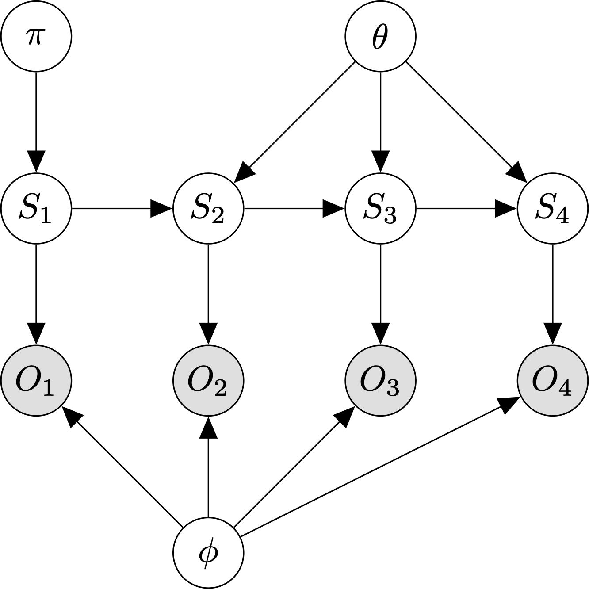

Hidden Markov models¶
A hidden Markov model (HMM) is a generative model for sequences of observations.

{kind=link}
Graphical model for an HMM with \(T=4\) timesteps.
An HMM assumes:
- The observations, O, are generated by a process whose states, \(S\), are hidden from the observer.
- Each hidden state is a discrete random variable.
- The hidden state at time t is independent of all hidden states before time \(t - 1\).
- The observation \(O_t\) is independent of all previous states and observations given the current hidden state, \(S_t\).
The parameters of an HMM model are:
- \(\pi\), the prior specifying \(P(S_1)\).
- \(\theta\), the \(K \times K\) transition matrix specifying \(P(S_t \mid S_{t-1})\).
- \(\phi\), the output model defining \(P(Y_t \mid S_t)\). If the observations are discrete, this is a \(K \times L\) emission matrix, where L is the number of unique observation symbols.
The HMM joint distribution of a sequence of states and observations is:
\[P(S_{1:T}, O_{1:T}) = P(S_1) P(O_1 \mid S_1) \prod_{t=2}^T P(S_t \mid S_{t-1})P(O_t \mid S_t)\]
where \(X_{1:T}\) is shorthand for \(X_1, \ldots, X_T\).
As with other latent-variable models, we use the expectation-maximization (EM) algorithm to learn the model parameters. The HMM-optimized version of the EM algorithm is known as the forward-backward / Baum-Welch algorithm.
Models
References
| [1] | Ghahramani, Z. (2001). “An Intro to HMMs and Bayesian networks”. International Journal of Pattern Recognition and AI, 15(1): 9-42. |